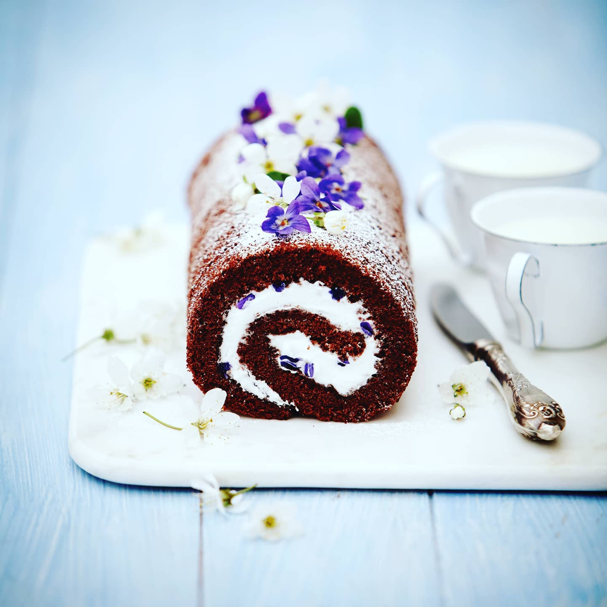

Kakaová roláda podľa @smart_press_nakladatelstvi — Normy Jedál
JEDNODUCHÁ ROLÁDA S FIALKAMI 🌺
Věděli jste, že květy fialky 🌺 jsou jedlé a dá se jimi ozdobit třeba jednoduchá piškotová roláda?
Přinášíme Vám recept: 📖
▶150 g polohrubé mouky
▶150 g pískového cukru
▶5 vajec
▶2 lžíce holandského kakaa
▶5 dl šlehačky + trocha moučkového cukru
Na ozdobu: květy primulek či fialek
Vejce ušlehejte s cukrem a kakaem do pěny a vmíchejte opatrně mouku. Na plech dejte pečicí papír a na něj opatrně rozhrňte těsto, aby vznikl čtverec či obdélník. Pečte asi 5 min. zprudka na 150°C, aby těsto vyběhlo a bylo vláčné.
Po zrůžovění vytáhněte korpus z trouby a ještě teplou placku i s papírem zarolujte a zabalte do utěrky. Šlehačku oslaďte a vyšlehejte, korpus rozmotejte a rovnoměrně posypte nachystanými květy, pás si schovejte na ozdobu. Znovu srolujte, nechte vychladnout v lednici a před podáváním ozdobte zbytkem květů.
Více květinových receptů najdete v naší KVĚTINOVÉ KUCHAŘCE zde:
https://www.smartpress.cz/kvetinova-kucharka
#rolada #piskotovarolada #kvetiny #jedlekvety #jedlekvetiny #recept #kvetinoverecepty #jednoducherecepty #dezerty #slehacka #kakaovarolada #janavlkova #kvetinovakucharka #kucharka #fialky #fialka #smartpress #nakladatelstvi #nakladatelstvismartpress #cookbook #flowerdessert #edibleflowers #violet #violetflower #dessert #swissroll